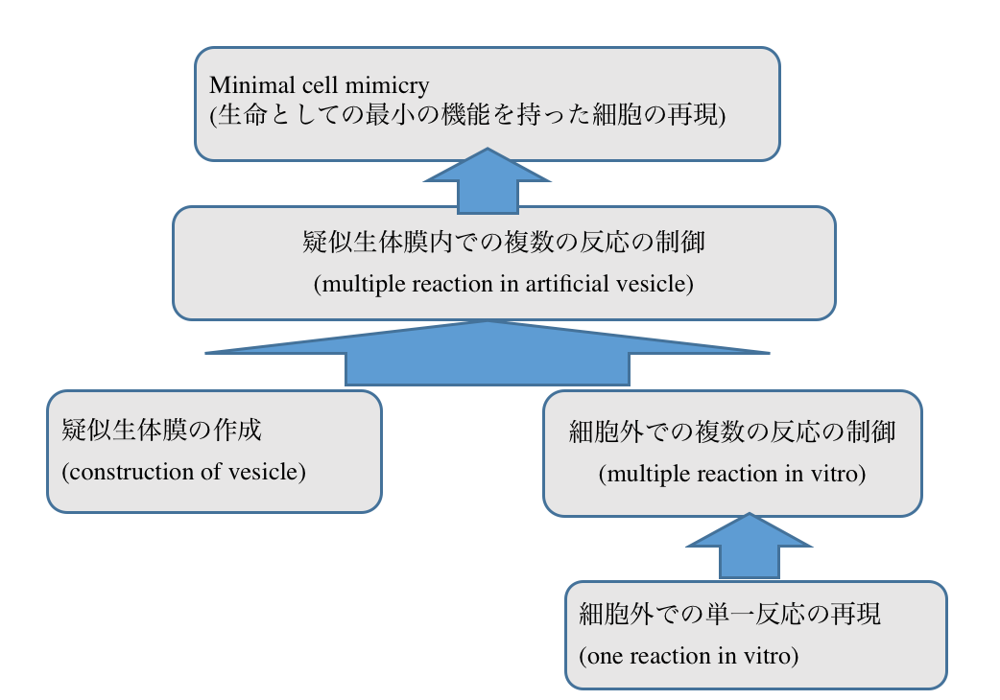

将来の展望および到達点/Futere work and our achievement
今回の研究を進めていくことによってどういった成果が期待できるか、また私たちはどこまで課題を達成できたかをここに記す。
(I wrote future work and our achievements.)
Minimal cell mimicryを作成することの意義は大きく分けて２つある。
(There are two meanings to construction of minimal cell mimicry.)
1つ目は生命誕生当初の細胞を再現できる可能性があることである。
(First, we may be able to recreate the first cell in the Earth.)
内容物の数を増やし、それらの相互作用を組み立てていくことによって、生物のような挙動をする小胞構造を形成することが期待できる。
(By putting a lot of components into the vesicle, we can make structure like a cell. When we make this, these components have complex relationship.)
今回は「自己増殖」「自己代謝」「進化」の３つの性質を持ったものを生物の定義として考える。
(In this study, we define “alive thing” as things which have self-maintenance, self-reproduction and evolvability.)
これらの3つの性質を併せ持った構造を構築することによって、地球で最初の生物をシミュレーションすることが出来る。
(If we construct vesicles which have these three characteristics, we can simulate first life in the Earth.)
2つ目は既に存在する生物の遺伝子の中で本当に必要なものだけを選別することが出来る点にある。
(Second, we can decide which genes or components are necessary for living cell.)
人工生体膜を用いて小胞を作成し、そこに生物由来の内容物を入れてゆく。
(We make artificial vesicles, and put components derived from living cell.)
最初は生きた細胞の内容物をすべて加え、徐々に必要がないと思われる内容物を除いたり、遺伝子をノックアウトしたりする。
(At first, we put all components into the vesicle. Next, we omit some components or knock down some genes.)
取り除いた段階で小胞が細胞として機能しなくなれば、その因子が生物にとって必要不可欠なものであったと考えられる。
(If the lack of components or genes causes failure of cell, the components or genes are considered to be essential for life.)
このような、生物にとって必要なものと不必要なものを分別することは、多くの研究にとっての基礎研究になると考えられる。
(To clarify what is essential for life is useful for many fundamental studies.)
また、こういった研究の応用例として、環境因子に応答して特定の物質を分泌するマイクロサイズのバイオリアクターが考えられる。
(Moreover, we will be able to make micro-size bioreactor which responds to environmental factors by applying this study.)
この機構は小胞内の遺伝子にプロモーター、リプレッサー、インデューサーを導入することによって達成できると考えられる。
(We can make this system by introducing promoter, repressor and inducer into the genes.)
今回の実験では入れ物となるベシクルの作成、小胞外での翻訳に成功した。
(This year, our team succeed at constructing vesicles and translation in vitro.)